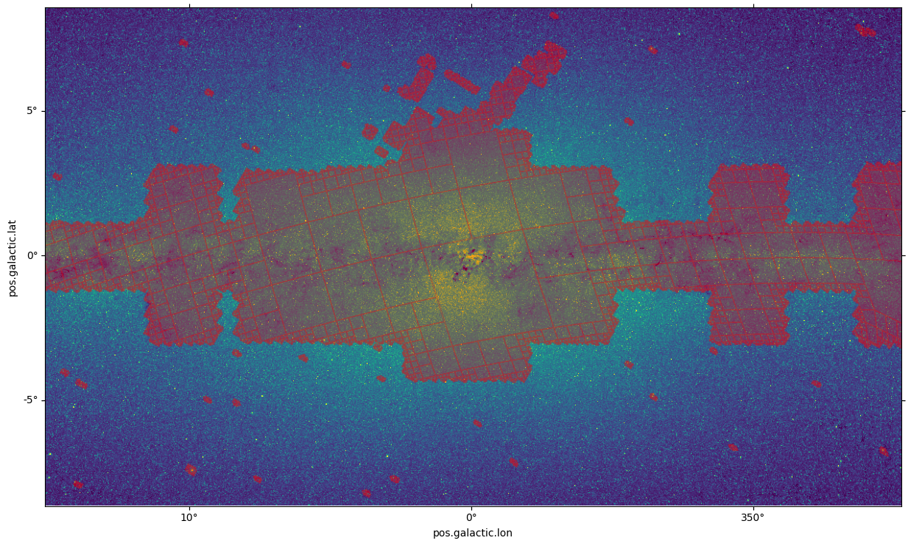
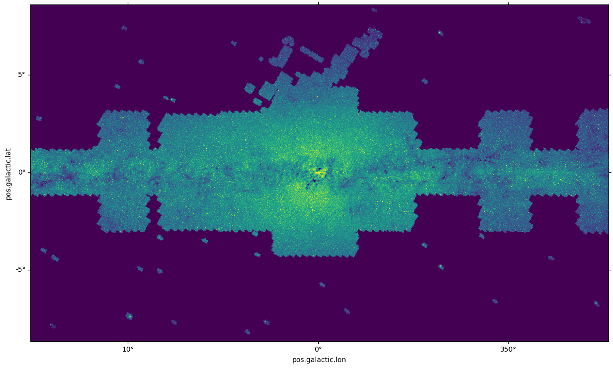

Overlay the MOC of Spitzer on a 2MASS cutout¶
[1]:
import astropy.units as u
import matplotlib.pyplot as plt
import numpy as np
from astropy.io import fits
from astropy.visualization import simple_norm
from astropy.wcs import WCS
from mocpy import MOC
[2]:
# load 2MASS cutout covering the galactic plane
hdu = fits.open(
"http://alasky.u-strasbg.fr/hips-image-services/hips2fits?hips=CDS%2FP%2F2MASS%2FK&width=1200&height=700&fov=30&projection=TAN&coordsys=galactic&rotation_angle=0.0&object=gal%20center&format=fits",
)
[3]:
# load Spitzer MOC
moc = MOC.from_fits("http://skies.esac.esa.int/Spitzer/IRAC1_bright_ISM/Moc.fits")
[4]:
# create WCS from 2MASS image header
twomass_wcs = WCS(header=hdu[0].header)
[5]:
fig = plt.figure(111, figsize=(15, 10))
ax = fig.add_subplot(1, 1, 1, projection=twomass_wcs)
moc.fill(ax=ax, wcs=twomass_wcs, alpha=0.3, color="red")
im = ax.imshow(
hdu[0].data,
origin="lower",
norm=simple_norm(hdu[0].data, "sqrt", min_cut=0, max_cut=150),
)

[6]:
# compute skycoords for every pixel of the image
width = hdu[0].header["NAXIS1"]
height = hdu[0].header["NAXIS2"]
xv, yv = np.meshgrid(np.arange(0, width), np.arange(0, height))
skycoords = twomass_wcs.pixel_to_world(xv, yv)
[7]:
ra, dec = skycoords.icrs.ra.deg, skycoords.icrs.dec.deg
[8]:
mask_in_moc = moc.contains(ra * u.deg, dec * u.deg)
/tmp/ipykernel_326933/2840231297.py:1: DeprecationWarning: This method is deprecated and has been replaced by contains_lonlat
mask_in_moc = moc.contains(ra * u.deg, dec * u.deg)
[9]:
img = hdu[0].data
img_test = img.copy()
img_test[~mask_in_moc] = 0
[10]:
fig = plt.figure(111, figsize=(15, 10))
ax = fig.add_subplot(1, 1, 1, projection=twomass_wcs)
im = ax.imshow(
img_test,
origin="lower",
norm=simple_norm(hdu[0].data, "sqrt", min_cut=0, max_cut=150),
)

[11]:
# number of pixels in the mask
np.sum(img[mask_in_moc])
[11]:
8690767.0
[12]:
# number of pixels in the entire image
np.sum(img)
[12]:
14976694.0